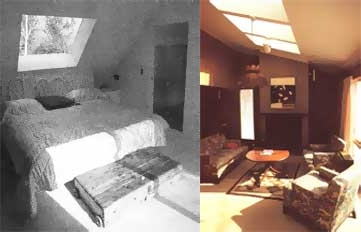
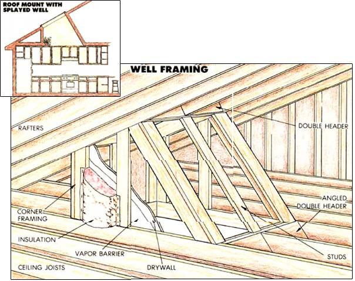
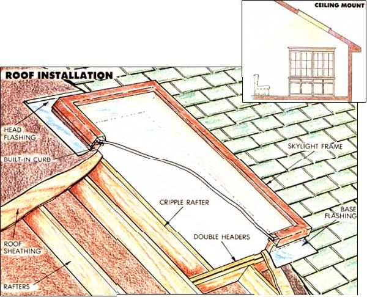

If the article in the last issue of Mother Earth News didn't convince you that skylights are a great choice for a low-cost remodeling project (see pages 38 to 40, January/February 1987), perhaps this follow-up will. Why? Because we'll show you how to save up to half the cost of the job by doing the installation yourself.
If you've never tackled anything like this before, it'll offer a mildly challenging, but very rewarding, learning experience. And even if you've done a fair amount of home carpentry, installing a skylight will present an opportunity to hone your skills on a fresh technique. Either way, you'll have something worthwhile to show for your effort.
Let's assume you have a pretty good idea of where you want to put your skylight and you're ready to price the model you have in mind. Don't run out the door and plunk your money down. Instead, climb into the attic with a tape measure and find out exactly what will fit in the area that's captured your imagination. Naturally, if your installation is to be in a cathedral ceiling-one in which the roof and interior ceiling sandwich the structural rafters-your job will be somewhat easier because you won't need to build a well to penetrate an attic space.
Measure the depth of the roof rafters and the distance they're spaced apart. Most likely, you'll have either 2 X 4s placed 16" on center or 2 X 6s set at 24" intervals. Check the area for wiring, plumbing vents, and other fixtures, and be prepared to reroute or move them if you have to. Also, look for structural interference: horizontal collar ties or vertical posts that support rafters and joists, or in the case of trussed roofs, braces and struts that share the roof load. With the former, you can usually work around the components or reposition them. Trusses are less forgiving and will probably require the advice of a structural engineer or the building inspector.
Most skylights are designed to fit standard rafter spacings and come in lengths varying from 2' to 6' . It's usually best to cut through no more than one rafter, so consider buying the narrowest skylight that will fit between three rafters and making up the area difference in length. When a rafter is cut, it's standard procedure to support the loose ends with headers, or boards fastened between adjacent rafters. Doubling up headers is common practice, but with the largest skylights, you may have to double the rafters as well. If you can't tie in to the ridge at the peak of the roof and the top plate of the wall below, merely "scabbing on" to the outside of the rafters with two-by's twice the length of the skylight opening will help stiffen the structural members.
If you're wondering how to accomplish all this without destroying the interior finish of a cathedral ceiling, your fears are well founded. The simplest solution is to choose a lightweight, moderately sized skylight that won't require extra support. Then you can merely cut away the ceiling material to match the hole. Should you need to do additional framing, though, accept the fact that you'll have to disturb the drywall to each side of the opening, and then some, to fit the double rafters properly.
Okay. You know what you're faced with and you've purchased your skylight accordingly. First, read the manufacturer's installation instructions thoroughly: That information is important because it applies specifically to your model. Then mark the rough opening for the unit on the roof or ceiling, allowing a fraction of an inch more all around than the skylight framing requires. Go on to pencil two more horizontal lines, one 3" above the top mark, and the other 3" below the bottom mark, to indicate the area intended for the double headers.
Now you're ready to frame the opening. If the cut is to be large, it's best to keep the roof from sagging by installing temporary braces, or kickers, against the rafters above and below the opening. Make them by nailing 3', or 4' scraps perpendicularly to the ends of 2 X 4s and wedging the Ts between the rafters and the ceiling joists or the floor below.
In the case of an exposed roof in an unfinished attic, simply cut the unwanted rafters) so the ends are square, allowing for the extra 3" taken up by each of the double headers. By far, the best tool to use for this job is a reciprocating saw (see sidebar). If you don't want to buy or can't borrow one, they're available at rental supply stores. Should you be cutting through a finished ceiling, find the centers of the side rafters, then trim away the ceiling material with a utility knife or with a circular saw set at the material's thickness. Remove any insulation, then cut the center rafter(s) as explained before.
Next, measure and cut the boards for the headers. They should be of the same thickness and depth as the rafters, and sized to span them snugly. Set the first header against the cut rafter, and check its alignment with a square. Toenail (drive the nails at a 30° angle to the header) the header to the rafters with 16d sinkers, then nail into the end of the cut rafter. Fasten the second header in the same manner, then repeat the procedure for the opposite double header. If you've chosen a half-width skylight that "floats" between the rafters, now's the time to install the trimmer rafter that will complete the framing of the rough opening.
Recheck the rough framing to see if it's square and is sized correctly, then drive nails through the roof sheathing from the inside corners to locate the hole's perimeter. At this point, you'll have to get on the roof and snap chalk lines between the nails to guide the cuts you'll be making.
For most owner-installed skylights, manufacturers recommend removing the shingles and the felt below them for a distance of about 10" around the top and sides of the opening. Do this with a flat bar and a utility knife. You can then snap your chalk lines directly onto the roof sheathing and make your four penetration cuts with a circular or reciprocating saw.
More than likely, the model you've chosen has a built-in curb, which raises the glazing panel several inches above the roof surface and directs water and shingle debris around the glass. If a curb's not included, you'll have to make your own from treated 2 X 4 stock, and toenail it to the header box, flush with the rough opening. Simple butt joints at the corners are sufficient.
You're now ready to set the skylight in place. Flashing kits that come with the unit may be of several different designs, depending upon the product. The simplest is a perimeter flange that relies upon nails and mastic to secure the unit and prevent leaks. With this type, a heavy layer of roofing cement is used as bedding between the plywood sheathing and the flange. Then after the flange is nailed to the roof, you apply a second layer of mastic over the nails and flashing, and cover that with patch strips of felt underlayment and shingles, starting from the corners of the-base flange, working up along the sides, and finishing across the top. The base flange extends over the lower course of shingles to shed water away from the cut.
Another common sealing method uses head and base flashing along the top and bottom walls, and strip flashing along the sides. The skylight and frame are fastened to the header box with nails, screws, or special clips. With this type of arrangement, both the head and base flashing sections are usually well designed and intended to last the life of the roof. Unfortunately, strip flashing, no matter how well made, probably will not. If the manufacturer offers a step flashing option (comprised of individual, overlapping sections), you might take it just to avoid leakage problems in the future.
It's important, no matter what the flashing method, that you follow instructions carefully and use the materials provided with your purchase. The fact that both are specific to your skylight will mean a sound installation and one that can be backed up by a manufacturer's warranty if necessary.
How you blend your skylight to the living area below depends upon the type of installation. If the unit is built into a cathedral ceiling, your choices are clear: Simply trim below the curb with wood and molding, or butt your ceiling material against the curb liner's bottom edge, using a router to rabbet a notch if needed. Another solution is to finish the curb or box with drywall and corner trim, apply tape and joint compound over the nailheads and seams, then sand and paint the lining to match the ceiling.
For rooms in which there's a ceiling below the roof, you'll need to plan and build a light well. Don't negate all your effort by restricting the shaft to the size of the skylight itself. Rather, work toward splaying the bottom out by angling the well's head or the base wall away from the skylight frame.
The severity of this angle will depend upon the location of structural members, the size of the opening, and the configuration of the room. Keep in mind, however, that the angle is simply a corollary to the position of the sun; the low altitudes of winter may need a steep well angle to admit direct light. Also, remember that a well that joins directly to a room wall is less conspicuous.
To frame out the well opening, follow the same procedures indicated for the header box, but carry through any splay angles to the header framing, too. The side framing should fall in line with the rafter framing above it; hang a plumb bob from the header corners to check this. If it doesn't, add a trimmer joist to keep the side walls parallel.
Once the headers are installed, frame in the four corners between the rafters and the ceiling joists with 2 X 4s, toenailing them flush with the insides of the boxes. Add studs where the frames span more than 16". To finish the job, staple a plastic vapor barrier to the inside edges of the well framing, then nail drywall over that. Insulate the well from the outside, using 3" of rigid foam, 6" fiberglass batts, or whatever combination will meet your local code. Once that's done, you can tape and compound the well's corner joints, and paint its surfaces white .
Your next and final concern should be a minor one if you executed the installation carefully. At the first heavy rain, inspect the skylight framing for leaks. Don't be alarmed by minor condensation, for that's normal to any window. If you've come this far without a breach, consider the job well done.
Imagine a bruiser of a jigsaw that looks like a chuckless industrial drill with a blade sticking straight out at the nose. It's called a reciprocating saw...and, in the building trades, it's a godsend.
The tool is powerful and maneuverable and fits about six dozen different kinds of blades. As a result, it can cut wood rough, smooth, and in circles; metal in bars, sheets, and tubes; and a variety of composition, fiberglass, and laminate materials...all with the back-and-forth motion that you'd use with a handsaw.
It's ideal for a project like installing a skylight because, mated to a wide blade of the proper length (4" to 7") and pitch (about six or seven teeth per inch), it can cut like rip through a hard-to-reach rafter in one pass. And, though a circular saw can cut a long, straight kerf better on an open surface (such as a roof sheathing), a well-supported reciprocating saw can come close, and can cut curves too.
About six different companies manufacture saws of this type, yet there are only minor variations between the products. If you're thinking about buying a reciprocating saw, consider its weight (6 1/2 pounds is light; 9 gets to be tiresome), cutting speed, and whether it's a variable- or two-speed model. A variable-speed drive can come in mighty handy when plunge-cutting or sawing metal.
Other things to look for are good balance, minimal vibration, and a clear view of the blade through the shoe. Some shoes are adjustable to control the depth of cut and allow you to use different sections of the blade as it wears down. Don't be intimidated by the list price while you're looking, either. On special, even the most expensive models can sell for less than $120.
|
Roof Installation/Well Framing |
 |
 |
|
 |
|
|